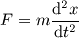

その他
----
目次
----
数学 ・・・・・・・・・・
物理学 ・・・・・・・・・
生き物 ・・・・・・・・・
石ころは何を思う ・・・・
リンク ・・・・・・・・・
英語 ・・・・・・・・・・
外国語 ・・・・・・・・・
語学・・・・・・・・・・・
言葉の文法・・・・・・・・
----
数学
----
微積分は、関数や図形の瞬間の速さや面積を求める。
導関数と呼ばれる、それぞれの瞬時の平均変動率を求める、関数の関数がある。
関数は多い。二次関数、三角関数、指数・対数。
論理、数列、幾何、ベクトル、行列、とある。
方程式と証明、関数とグラフ、幾何学と論理が主な内容である。
◇◇
微分は、1つの直線に収束する変動の接線を求める。
積分は、関数や図形の総和、面積を求める。
◇◇
物理は、微積分や数学を自然界の現象に応用する。
自然には、関数や微積分が多い。特に、微積分は運動の関数にも、波動の関数にも使える。
空間や時間、運動や力、光や音や波、熱、重力やエネルギーや仕事量などがある。
単位と物理量、方程式と関数を使って考える。
◇◇
数学は、ごく小さな定義と証明を積み重ねて、全ての数と量の関係性を知る。
全て正しい。
物理学は、自然の現象を知り、正しい考え方をする。
宇宙や身の回りの現象を全て捉える。
言葉と数式にすること、覚えること、考えること、知ること、である。
----
物理学
----
デカルトは、宇宙の構成を「理性」で捉えることが出来ると主張した。
ニュートンは、宇宙は三次元の空間に物質が存在し、互いの関係性で、一つの法則の元に運動し影響を与え合いながら、この宇宙の姿を作っていることを仮説とした。
この仮説は、宇宙の構成についてほとんどのことを説明できたので、ニュートンの宇宙観は20世紀に至るまで多くの技術発展の基礎となった。
◇◇
ニュートンの3つの法則は、
まず、慣性の法則。物体は、外部から作用を受けなければ、その速度は一定である。
動いているものは動き続け、止まっているものは止まり続ける。
◇◇
次に、ニュートンの運動方程式。物体の加速度は、物体に作用する力に比例し、物体の質量に反比例する。数式で表すと

となる。
◇◇
もう一つ、作用反作用の法則。物体が他の物体に力を及ぼす時、その物体は同じ大きさの反対向きの力を他方の物体から受けている。
◇◇
これらが、ニュートン力学の基礎である。
----
生き物
----
地球上の生き物の助け合いについて。
◇◇
生き物は、ひとりだけではなく、他のものを食べたり、吸収したりして生きている。
動物は、動物や植物の果実や葉っぱを食べる。植物は、光合成で光のエネルギーを吸収している。
◇◇
そこで、生き物は自由なのであろうか、それとも、環境に従属する機械なのであろうか？
◇◇
自由と考えると、意思と本能、という問題になる。
環境と同じ、例えば、果実を人間が食べるから、果実は人間が食べるために生まれる、
と考えると、機械のようなものに見える。
自由ならば、果実は果実が増えるためにある。食べられた後、中の種から新しい子供の木が生まれるからだ。
◇◇
それから、進化論と創造論はどちらが正しいのか、という問題がある。
地下に埋もれた類人猿の骨格などから判断すると、おそらくは進化したはずである。
◇◇
それでは。
----
石ころは何を思う
----
石ころは何を思っているんだろう。
◇◇
思うためには、脳や心が無くても良いんだろうか。
例えば、何にも無いそこらへんの葉っぱも、
生きているから何かを思っているのだろうか。
◇◇
生きていないように見えるものも
生きていたり、
生きていなくても、何かを思っているかもしれない。
◇◇
そうすると、石ころだって
例えば、山の中にある岩石のように
大きなものだってある。
◇◇
地球の一部として
細胞のような、カルシウムで出来ている骨のように
一部として、何かを思っているかもしれない。
◇◇
そうすると
「なんで石は石なんだろう。植物みたいな良い物に変わりたい」
と思って、ある日突然、植物みたいになるかもしれない。
◇◇
石に聞きたいことは、「今日はどうだった？昨日と何が違う」と
「なんで石になったの？他のものはどう思う？」と
「人間は好きかい？僕は君より賢いかな？」ぐらいだ。
----
リンク
----
色々と、資料としても、参考としても、主題としても。
◇◇
世界史ノート
http://www3.kct.ne.jp/~atonoyota/
◇◇
物理のかぎしっぽ
http://hooktail.sub.jp/
◇◇
ＥＭＡＮの物理学
http://homepage2.nifty.com/eman/
◇◇
東外大言語モジュール（英語はありません。各国語、リンクの仕方が複雑です。文法モジュールでは、カードだけでなく、解説や例文、練習問題も参考になさって下さい）
http://www.coelang.tufs.ac.jp/modules/
◇◇
Googleニュース
http://news.google.co.jp/
◇◇
Googleニュースは、言語と地域を変えると、世界中のニュースが見れます。
----
英語
----
辞書は、英辞郎
http://www.alc.co.jp/
◇◇
インターネットで見れる、BBC
http://www.bbc.co.uk/
◇◇
ニューヨーク・タイムズ
http://www.nytimes.com/
◇◇
その他の外国語
東外大言語モジュール
http://www.coelang.tufs.ac.jp/modules/
文法モジュールでは、カードだけでなく、解説や例文、練習問題も参考に
----
外国語
----
僕は、外国語のCDを聴いていると、頭や精神が治る。
英語は、一番感情が治る。
フランス語は、きちんと治る。
ドイツ語は、脳が治る。
イタリア語は、意識が高くなる。
そして、スペイン語は、精神が一つに治る。
これらが良かった。これらの国が好きだ。
◇◇
それから、出来るためにはどうするか。
会話すれば覚えるように見える。
いつか、賢かった時代にしたフランス語は、何故かまだ少し覚えている。
◇◇
英語で英語を考える、フランス語でフランス語を考える、
ドイツ語でドイツ語を考える、ようにすれば、
分かるように思う。
◇◇
重要な単語は少なくて
どの単語にもきちんと意味がある。
知った後には、きちんと分かる。
◇◇
そんなものかな。
----
語学
----
フランス語、ドイツ語、英語を頑張りましょう。
◇◇
ここにいくらか載せます。
◇◇
こんにちは - 仏: Bonjour. - 独: Guten Tag. - 英: Hello.
◇◇
おはよう - 仏: Bonjour. - 独: Guten Morgen. - 英: Good morning
◇◇
こんばんは - 仏: Bonsoir. - 独: Guten Abend. - 英: Good evening.
◇◇
おやすみ - 仏: Bonne nuit. - 独: Gute Nacht. - 英: Good night.
◇◇
さようなら - 仏: Au revoir. - 独: Auf Wiedersehen. - 英: Goodbye.
◇◇
私の名前は山田です - 仏: Je m'appelle Yamada. - 独: Ich heise Yamada. - 英: My name is Yamada.
◇◇
あなたのお名前は何ですか - 仏: Comment vous appelez-vous? - 独: Wie heisen Sie? - 英: What's your name?
◇◇
ありがとう - 仏: Merci. - 独: Danke schon. - 英: Thank you.
◇◇
発音を覚えるためにテレビをリンクしておきます。
France24 - フランス語
http://www.france24.com/fr/
ARD - ドイツ語
http://www.ard.de/
ZDF - ドイツ語
http://www.zdf.de/
BBC - 英語
http://www.bbc.co.uk/
----
言葉の文法
----
複数形は-taあるいは-hta
～はを-es
～のを-eh
～にを-era
～をを-ero
◇◇
動詞
-ehcheを不定形とし、-asを1人称、-aを2人称、-ahを3人称、-asd、-ad、-ahdを1人称、2人称、3人称の複数とする。
過去形は、動詞の前にデ。
◇◇
形容詞や副詞、関係代名詞
形容詞は-ana、副詞は-ime、関係代名詞は、前にエス、とする。
◇◇
例文
ドイツでは自由革命が起きた。
イェ・イナナ・デーチェス＝エンデ・レボネス・フリーダナ・デ・マーカー。
自由な人が好きよ。
ライカス・パーセロ・エス・フリーダー。
自由にしたい。
ワンタス・フリーデーチェ。
◇◇
その他
動詞に意味を付け足して利用する際、動詞は-eとする。